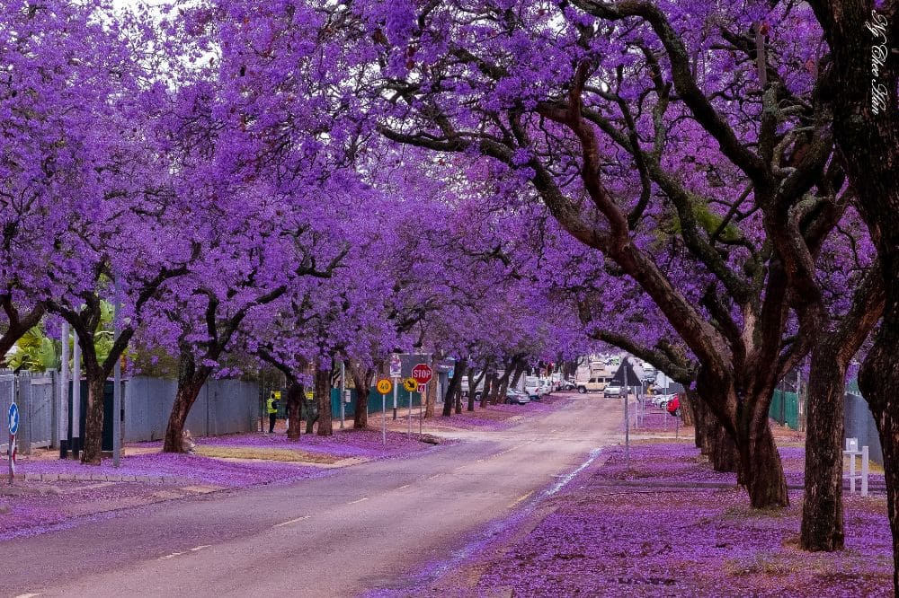
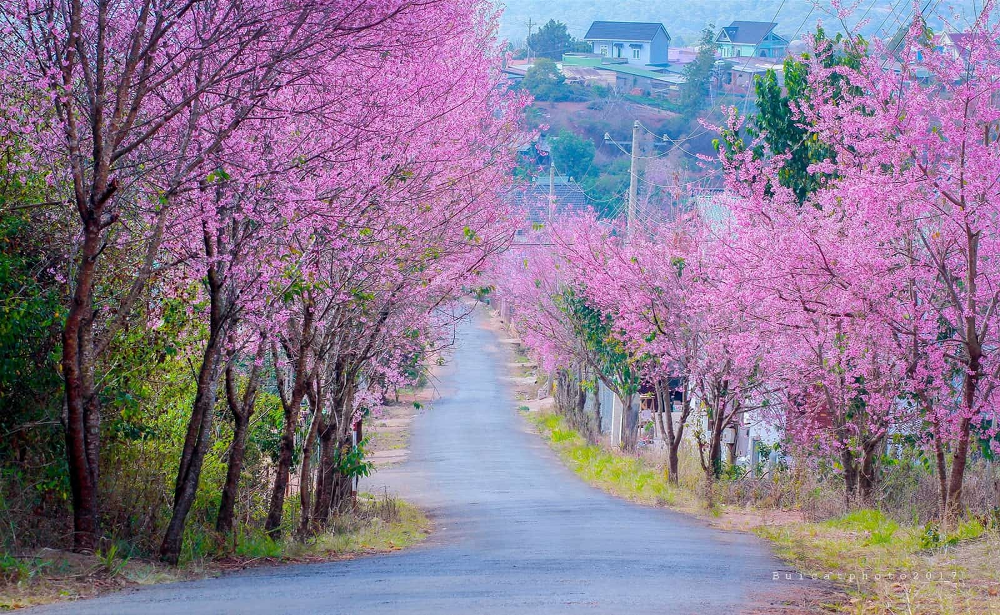
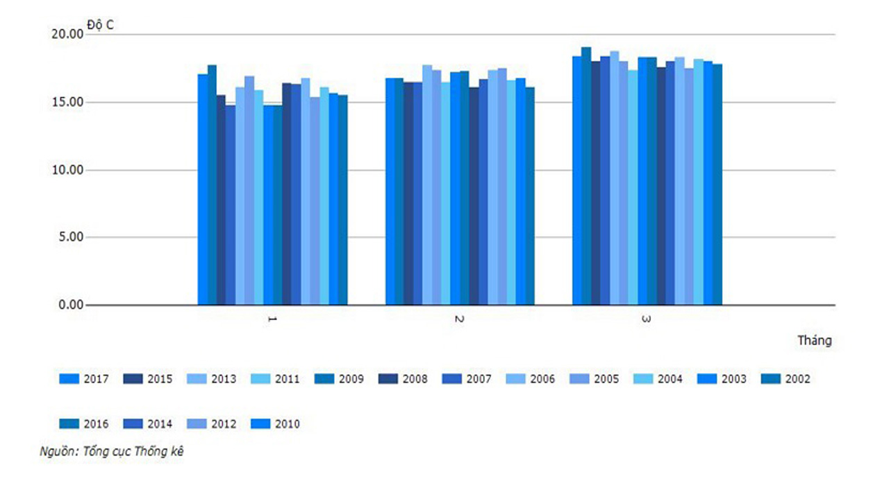
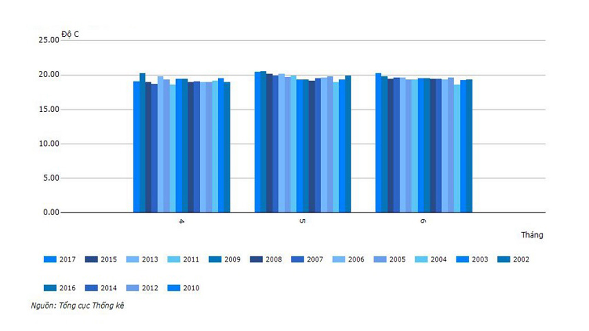
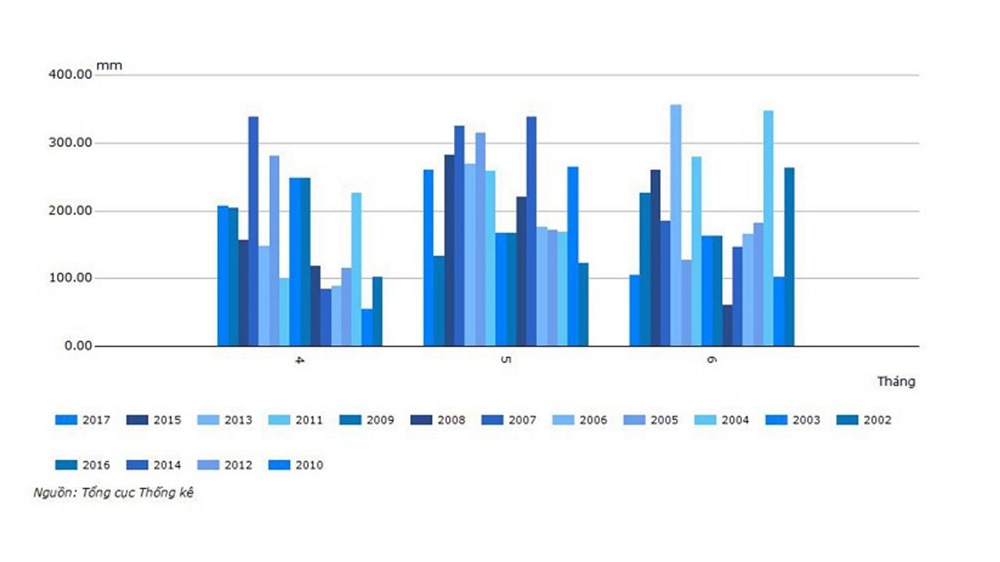
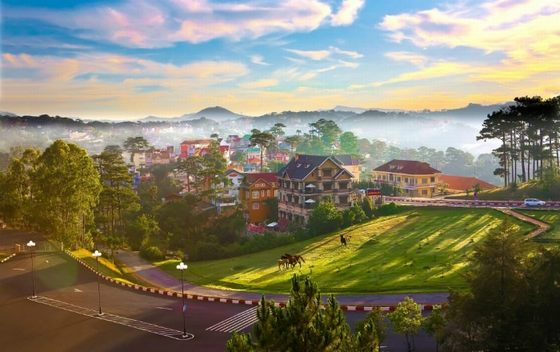
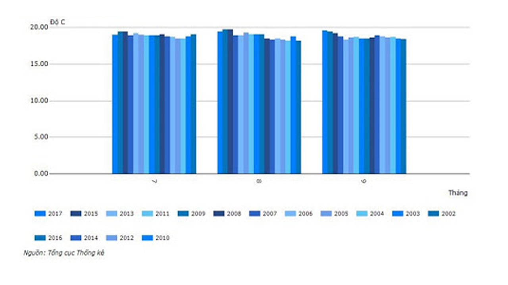
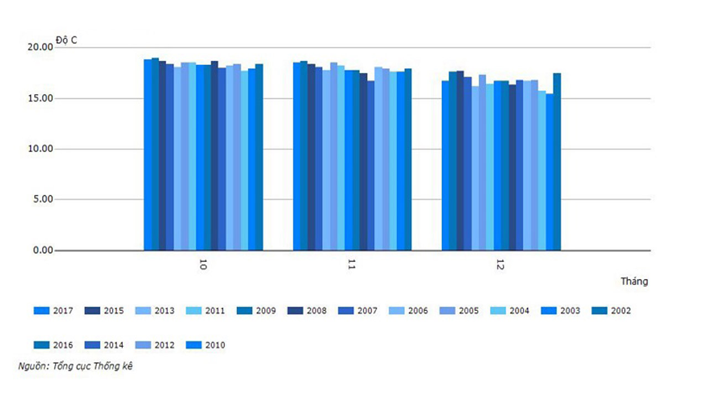

Nên đến tham quan Đà Lạt vào mùa nào là lý tưởng nhất?
Có vẻ câu hỏi này rất khó để trả lời thấu đáo, trọn vẹn bởi “chín người mười ý”. Tùy vào sở thích và “gu” thẩm mỹ của mình mà du khách chọn đến Đà Lạt vào mùa nào. Mà thật ra, phân chia mùa ở Đà Lạt như mùa xuân, mùa thu, mùa đông, mùa hạ một cách tách bạch, rõ ràng thì rất khó.
Đà Lạt nằm ở độ cao khoảng 1500m so với mực nước biển, chính vì vậy nhiệt độ nơi đây thường thấp, khí hậu thường mát mẻ, trong lành. Đà Lạt không như Hà Nội nên khó có thể phân biệt được đâu là mùa xuân, hạ, thu, đông.

Cũng có du khách nó rằng khí hậu trong 1 ngày ở Đà Lạt thôi cũng đã đủ để chuyển tải khí hậu cả 4 mùa xuân – hạ - thu – đông. Vì vậy, việc lựa chọn mùa đến Đà Lạt là phụ thuộc hoàn toàn vào điều kiện và sở thích của mỗi du khách.
Thường các du khách đặt Tour du lịch Đà Lạt hay chọn đến Đà Lạt vào mùa xuân, khi hoa mai anh đào nở rộ. Đây là nhóm du khách thích cảnh đẹp của Đà Lạt vào những ngày cuối đông, đầu xuân, khoảng tháng 12, 1, 2 dương lịch.

1. Mùa xuân ở Đà Lạt
Mùa xuân Đà Lạt như khoác lên màu áo mới với màu sắc rực rỡ của nhiều loài hoa. Bạn không chỉ được tận hưởng bầu không khí mát mẻ và dễ chịu của thời tiết Đà Lạt mùa này mà còn được chiêm ngưỡng vẻ đẹp của nhiều loài hoa đua nở. Đặc biệt, trên khắp con đường của thành phố Đà Lạt sẽ rực rỡ sắc màu của hoa mai anh đào khoe sắc.
1.1. Đà Lạt lạnh vào mùa xuân?
2. Hè đi Đà Lạt tránh nóng
Khi sắc hồng của Mai Anh Đào sẽ nhường chỗ cho phượng tím thì cũng là lúc báo hiệu mùa hè Đà Lạt đã đến. Phượng tím đem lại cho Đà Lạt không gian thơ mộng, đầy chất lãng mạn nhưng lại man mác buồn. Lên Đà Lạt tránh nóng là hoạt động được nhiều du khách ưa thích vào mỗi đợt nắng nóng cao điểm.
2.1. Đặc điểm thời tiết Đà Lạt vào mùa hè
Đà Lạt lạnh se se vào sáng sớm và chiều tối mùa hè khiến con người cực kỳ dễ chịu và thoải mái với nhiệt độ mùa này. Đà Lạt bước vào mùa hè từ tháng 4 đến hết tháng 6, nhiệt độ trung bình từ 18 – 20 độ C, độ ẩm trung bình là 81 – 90%. Thời tiết Đà lạt mùa này sẽ ấm hơn mùa xuân và xuất hiện sương mù phổ biến. Tháng 4 có vài ngày thường xảy ra mưa đá, cường độ mưa không lớn và mưa trên diện tích hẹp.

Lượng mưa vào mùa hè tương đối cao, thỉnh thoảng có dông và mưa rào thường xảy ra vào buổi trưa và buổi chiều vào khoảng tháng 5 và tháng 6. Sương mù Đà lạt tạo nên thành phố chìm trong cảnh hư hư thực thực của bầu trời.

3. Đà Lạt mùa thu với nền trời trong vắt
Đà lạt vào thu là thời điểm chuyển giao chuẩn bị đón nàng đông về. Chắc hẳn nhiều bạn cũng đã từng thắc mắc rằng mùa thu Đà Lạt có lạnh không và có gì hấp dẫn mà lại làm cho người du khách mê mẩn đến vậy? Đó chính là những buổi sớm tất bật se lạnh, không gian phủ đầy sương mờ ảo và là hoàng hôn tím đầy an nhiên.

3.1. Thời tiết Đà Lạt vào mùa thu
Bạn sẽ không phải lo lắng việc vào thu Đà Lạt có lạnh không vì nhiệt độ trung bình từ 18 – 19 độ C, độ ẩm trung bình từ 85-90% và đây là thời kỳ ẩm nhất trong năm. Mùa Thu Đà Lạt bắt đầu từ tháng 7 đến tháng 9 hàng năm. Gió mùa tây nam mang những đợt mưa lớn và kéo dài cho Đà Lạt trong khoảng thời gian này. Lượng mưa cũng lớn nhất trong năm với lượng mưa trung bình tháng dao động từ 200 – 300mm.

4. Đông Đà Lạt – mùa Đà Lạt đẹp nhất trong năm
Khi những cơn mưa kéo dài chấm dứt, chút nắng hanh khô ùa về bên những cơn gió lạnh trên mảnh đất cao nguyên hùng vĩ. Ấy cũng là khi ta biết được rằng phố núi đã vào đông. Đà Lạt mùa Đông đẹp rực rỡ lạ kỳ. Hoa Dã Quỳ đang bước vào mùa nở rộ, những rừng thông reo vang trong gió, hương thơm thuần khiết của đất trời như mời gọi lòng người.
4.1. Mùa đông Đà Lạt có lạnh không?
Đông Đà Lạt lạnh cũng chỉ từ 16 – 19 độ. Khi mùa hoa dã quỳ rực rỡ nhất ở Đà Lạt thì lúc đó cũng là thời điểm báo mùa Đông đã đến. Mùa đông Đà Lạt kéo dài từ tháng 10 đến hết tháng 12 với nhiệt độ trung bình từ 16 – 19 độ C, độ ẩm trung bình từ 80-85%. Độ ẩm cao vì tháng 10 vẫn có mưa, thời tiết khô hanh là chủ đạo.

Gió ảnh hưởng đến vùng đất tại thời điểm này là gió mùa đông bắc. Thời tiết Đà Lạt tốt hẳn lên, khô hanh và bạn không phải băn khoăn về Đà lạt có lạnh không nhé. Thời điểm này vô cùng thích hợp cho hoạt động du lịch vì thời tiết mát mẻ và khô ráo.